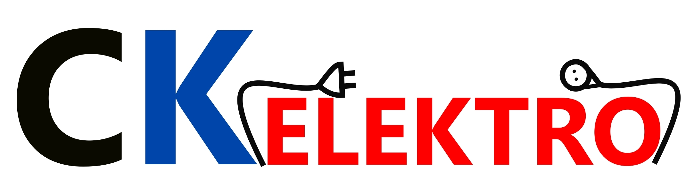
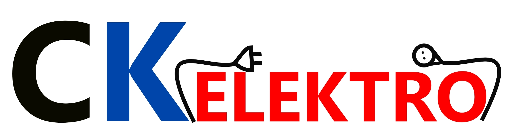

Usługi elektryczne, te małe i te duże :)
Jesteśmy stosunkowo młodą firmą ale zato z olbrzymim doświadczeniem. Specjalizujemy się w pracach energetycznych, instalacyjnych, wykopach ziemnych oraz przy pracach na wysokościach.


Jesteśmy stosunkowo młodą firmą ale zato z olbrzymim doświadczeniem. Specjalizujemy się w pracach energetycznych, instalacyjnych, wykopach ziemnych oraz przy pracach na wysokościach.
Witaj kliencie